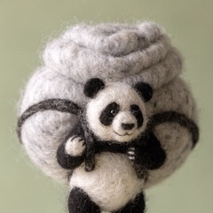
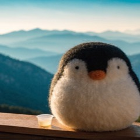
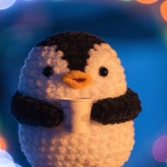
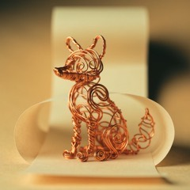
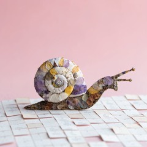
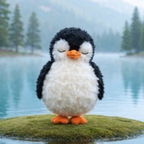
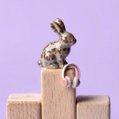

🟡 STAGING · 本番前
Not out yet 🐧
ここは本番前です。スマホからも ChatGPT/Codex からも見られますが、トップからはリンクしていないし、検索にも出ません。
気に入ったものだけ「これ出して」と言えば 本番 に移ります。
🟡 Waiting
まだ本番に出していないもの。「これ出して」と言えば本番へ。
But How
I want to become someone who can ask for help
Thailand First Trip
My first trip abroad was a solo trip to Thailand
Eighth Floor
The best way to kill time at Nagoya Station is a bookshop

Food With View
Moch Cafe in Baguio has good food and a huge calm view

Beautiful Chaos
Khaosan Road was the most fun part of my Thailand trip

The Question
I ask myself whether I absolutely have to do it

So I Stopped
I gave up trying to manage myself perfectly

Finally Flat
Burnham Park was a rare flat place to walk in hilly Baguio

The Winner
My top three buys of 2026, and headphones won
School Memories
My language school life in Baguio was full of good memories